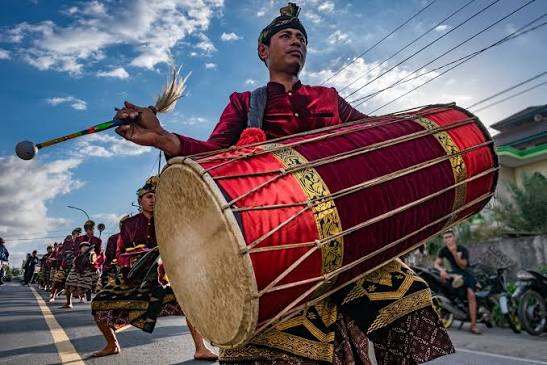
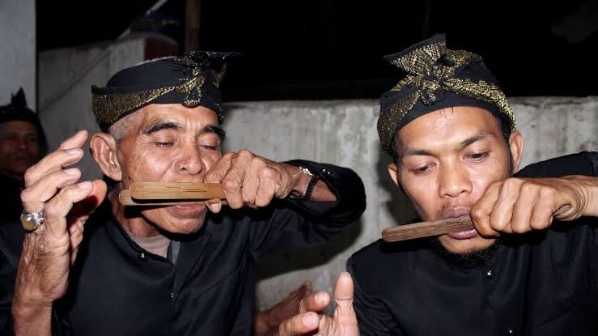
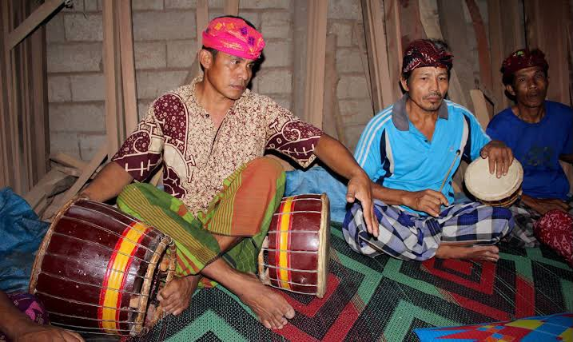
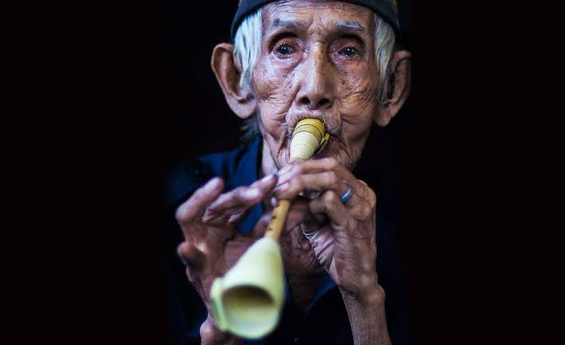

JELAJAHI BUDAYA LOMBOK
Dokumentasi visual alat musik dan pertunjukan tradisional masyarakat Sasak.

Alat musik tradisional berukuran besar yang dimainkan secara berkelompok dalam pertunjukan budaya masyarakat Sasak.

Alat musik tradisional khas masyarakat Sasak yang menghasilkan bunyi melalui getaran dan resonansi rongga mulut.

Alat musik perkusi berbentuk bundar yang dimainkan dengan cara dipukul dan digunakan dalam kegiatan kesenian masyarakat Lombok.

Serunai atau Serune Sasak merupakan alat musik tiup tradisional yang dikenal dalam kebudayaan masyarakat Lombok.
Saksikan keunikan pertunjukan alat musik tradisional masyarakat Sasak melalui dokumentasi video.
Dokumentasi pertunjukan Gendang Beleq, salah satu kesenian musik tradisional masyarakat Sasak di Lombok.
Dengarkan suara khas alat musik tradisional Gendang Beleq dari Lombok.